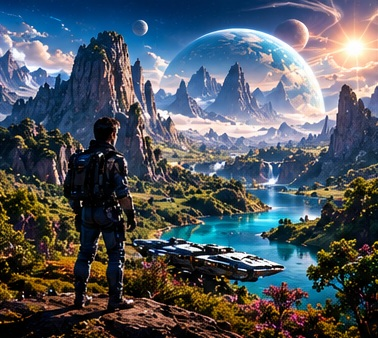
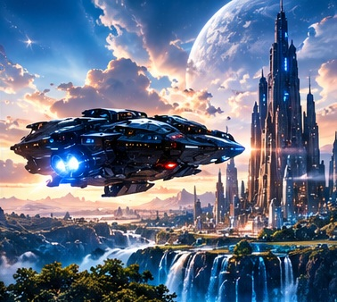
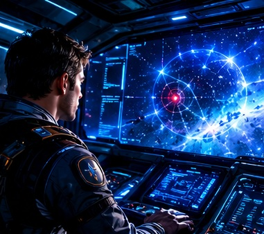
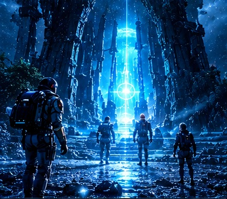
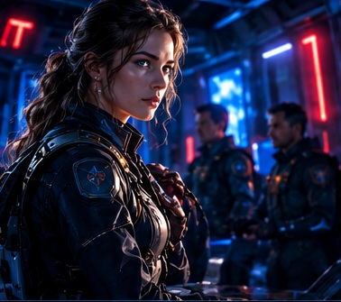
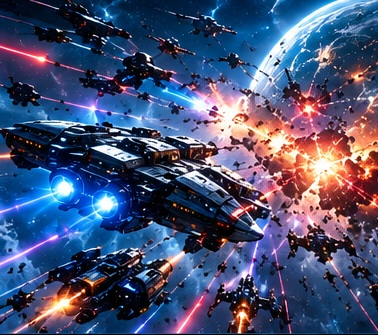
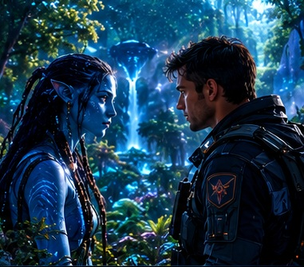
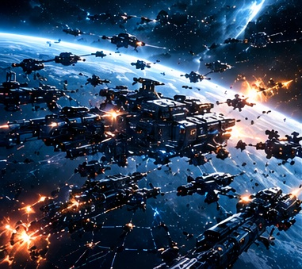
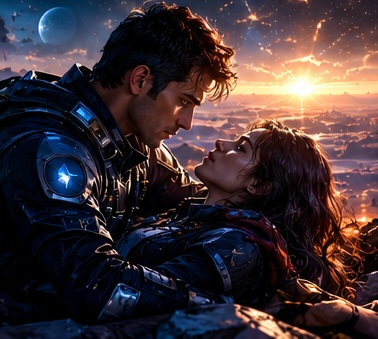
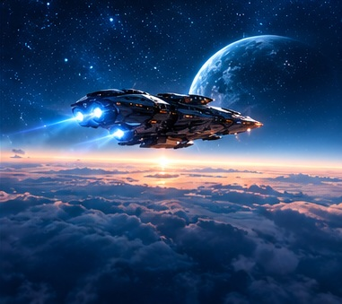

Una señal al otro lado de las estrellas
La humanidad llevaba generaciones explorando el universo. Pero cuando la Aurora detectó un planeta que no aparecía en ningún mapa, César comprendió que su tripulación estaba a punto de encontrar un secreto capaz de cambiar el destino de muchos mundos.
«A veces, lo desconocido no viene a destruirnos; viene a preguntarnos quiénes queremos ser».

01. La decisión
En una galaxia que parecía haberlo conquistado todo, el capitán César recibió una misión que podía cambiar el destino de la humanidad.
«Lo que está perdido todavía puede encontrar un camino».

02. El planeta olvidado
Más allá de las rutas conocidas, la tripulación de la Aurora encontró un planeta cubierto de vida y ruinas antiguas.
«No era un simple descubrimiento: era un destino».

03. La llegada de la Aurora
La nave descendió entre montañas imposibles y ciudades silenciosas. César sintió que aquel lugar guardaba una historia que nadie debía ignorar.
«Las estrellas guardan secretos para quienes se atreven a mirar».

04. La señal
Una señal desconocida apareció en los sistemas. No era una llamada de auxilio común: parecía venir de algo que llevaba siglos esperando.
«No todo lo que brilla en el espacio es una bendición».

05. El secreto bajo la superficie
Bajo el planeta, la tripulación descubrió una tecnología ancestral capaz de sanar mundos… o destruirlos.
«El pasado nunca desaparece; solo espera».

06. La traición
Alguien de la expedición filtró las coordenadas. De pronto, la misión científica se convirtió en una lucha por sobrevivir.
«La mayor amenaza no siempre viene del exterior».

07. La huida
La Aurora escapó bajo fuego enemigo. Con daños en el casco y sin refuerzos, César tuvo que confiar en su tripulación.
«La libertad no es un lugar: es una decisión».

08. La aliada inesperada
En los bosques luminosos conocieron a Lyra, una habitante del planeta que conocía el verdadero propósito de la tecnología.
«No todos los que habitan este mundo son enemigos».

09. La batalla
Una flota enemiga llegó para apoderarse de la fuente de vida. La Aurora y los defensores del planeta se prepararon para resistir.
«No se trata de ser el más fuerte, sino de no rendirse».

10. El sacrificio
César tuvo que tomar una decisión dolorosa para proteger a sus compañeros y evitar que la fuente cayera en manos equivocadas.
«A veces, el mayor acto de amor es proteger el mañana».
11. El renacer
Tras la batalla, el planeta comenzó a sanar. Los supervivientes entendieron que su alianza podía cambiar el futuro de muchas civilizaciones.
«Algunos viajes no terminan: se transforman».

12. El futuro
César y Lyra eligieron proteger aquel mundo. La misión que empezó como una exploración se convirtió en una promesa de esperanza.
«El verdadero futuro se construye juntos».
El comienzo de un nuevo futuro
Cuando el polvo de la batalla se disipó, el planeta dejó de ser un misterio y se convirtió en un hogar que debía protegerse. César, Lyra y la tripulación de la Aurora regresaron distintos: habían descubierto que el mayor poder no era una tecnología ancestral, sino la decisión de cuidar la vida.
«El futuro no está escrito en las estrellas. Se construye con cada decisión que tomamos».
Volver ↑